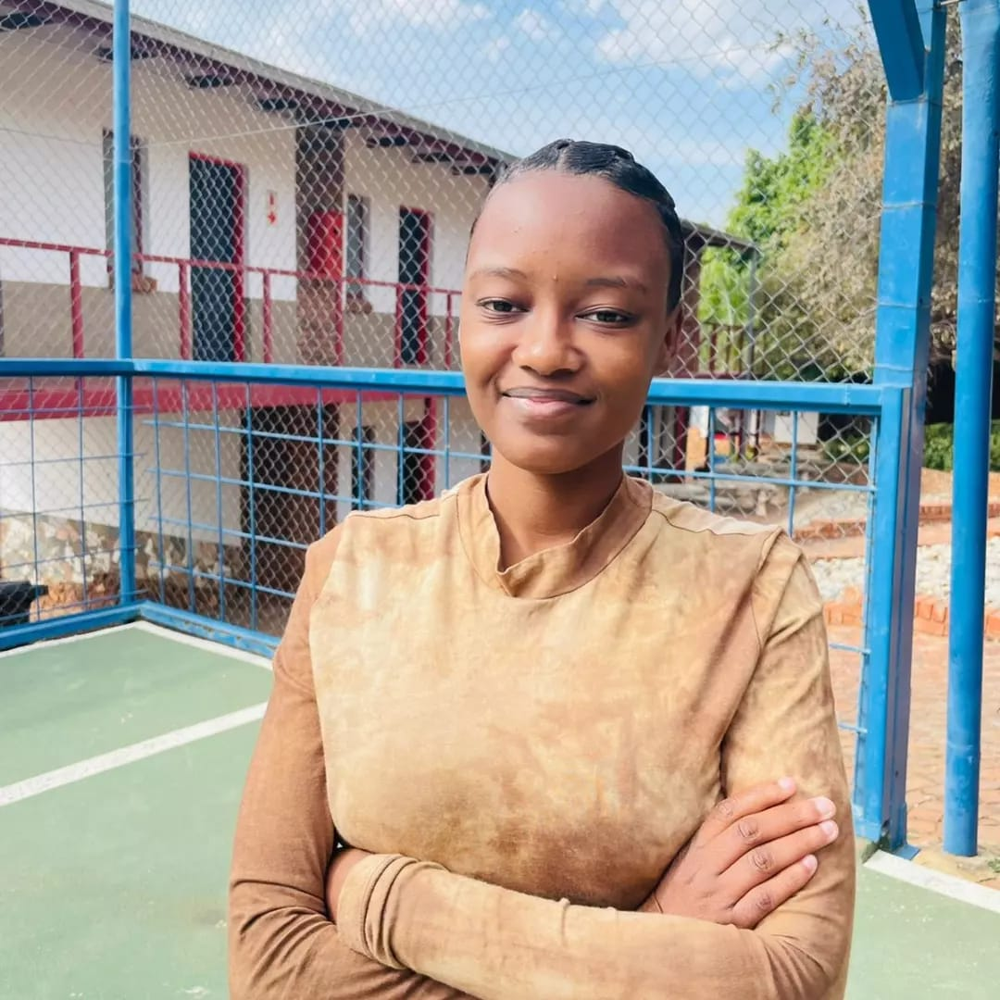

I am Junior Web Developer and aspiring IT professional with one year experience in building responsive website using HTML, CSS, Wordpress, Elementor Pro and Flutterflow. Through my internship and personal projects, I have developed skills in website design, layout structuring and creating user-friendly interfaces. I enjoy learning new technologies, solving problem and building modern websites that provide a great user experience. I am eager to grow my skills, gain industry experience and contribute to innovative digital projects.
Year Internship
Projects Completed
Graduate
Always Learning
I write clean, readable code.
I enjoy solving problems.
Using latest technologies.
Collaboration and teamwork.
Creating websites that work on all devices.
Always staying up-to-date with the latest technologies.
Ensuring high-quality output in all work.
Efficiently managing time and meeting deadlines.
